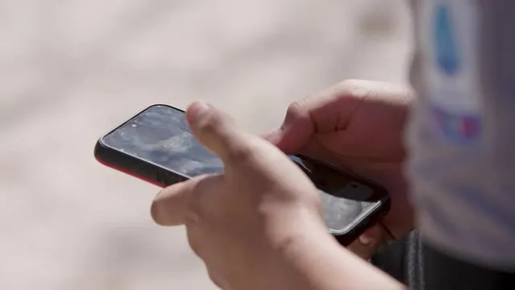

Rotina digital na sala de aula
Tecnologia que ajuda, não atrapalha.
Publicado em 22 de julho de 2026

fonte da imagem: Adobe stock
Na sala de aula, a tecnologia pode ser uma aliada importante para aprender, pesquisar e tirar dúvidas, mas o uso em excesso atrapalha mais do que ajuda. Quando o celular e as redes estão sempre por perto, a atenção se divide o tempo todo entre o conteúdo da aula e as notificações, e isso faz você perder explicações, se cansar mais rápido e sentir que está “sempre ligado”, mesmo sem aproveitar direito o que está vendo.
Por isso, é fundamental ter uma rotina digital clara: usar o celular com objetivo, em momentos definidos, e não como “reflexo automático” toda vez que bate o tédio. Na prática, isso significa deixar o aparelho no silencioso durante a aula, guardar quando não for necessário, evitar ficar abrindo redes sem motivo e só usar quando o professor pedir ou quando realmente for ajudar no estudo. Assim, o cérebro entende que aquele momento é de foco e você consegue aprender melhor, participar mais da turma e ainda chegar ao fim do dia com menos cansaço mental.
O excesso de telas não é só questão de tempo, mas de qualidade de uso. Alternar o tempo todo entre explicação e notificações atrapalha a concentração, aumenta a ansiedade e pode prejudicar o sono, porque o cérebro demora a “desligar” depois de tantos estímulos seguidos. Cuidar da sua saúde digital é também cuidar da sua saúde emocional: respeitar seus limites, organizar seus horários e fazer da tecnologia uma ferramenta a seu favor, e não uma fonte constante de distração.
Ter uma rotina é o que transforma esse cuidado em hábito: você passa a saber quando é hora de olhar para o celular e quando é hora de olhar para o quadro, para o professor e para a atividade. Esse equilíbrio é parte da sua responsabilidade com o próprio futuro. Não se trata de proibir telas, mas de escolher bem quando e como usá-las, principalmente dentro da sala de aula, onde cada minuto de atenção faz diferença.
Fontes:
Ministério da Educação – “Equilíbrio digital: entre telas e emoções”;
Guia de uso de dispositivos digitais por crianças e adolescentes;
Sociedade Brasileira de Pediatria – uso saudável de telas na saúde escolar.